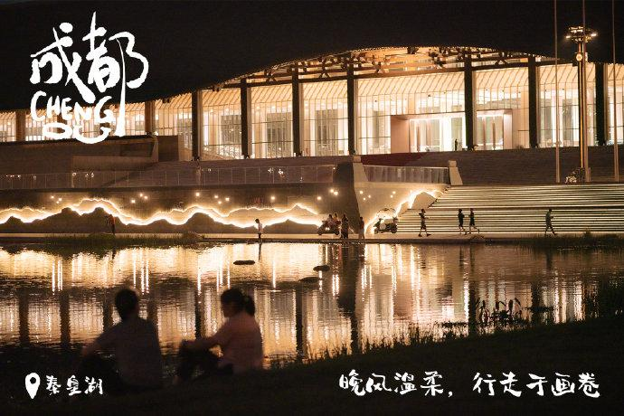

The Details

我这有趣的灵魂
和普通的外表
自我认知
个子不高头发长，有鼻子有眼儿，是个人样。
人生经历
生于四川偏僻小县城，早年移居繁华大都市成都，前半生坎坷艰辛。
人生机遇
中考用尽了一生的运气进入了成都树德中学，从此，宁当凤尾，不做鸡头，老师关爱，同学互助，芙蓉郭西，盈亭弦诵，意气风发少年。
真实的我
摸爬滚打十八年，靠的不仅是我的实力，运气，还有坚韧不拔的意志和热情勇敢，勤劳友善的正确价值观，人生观，世界观。
特殊技能
像大耳朵图图一样动耳朵，乐观，死了都要乐观，也就是遗传我妈的极高的逆商，反手摸耳朵。
更多
我也不知道